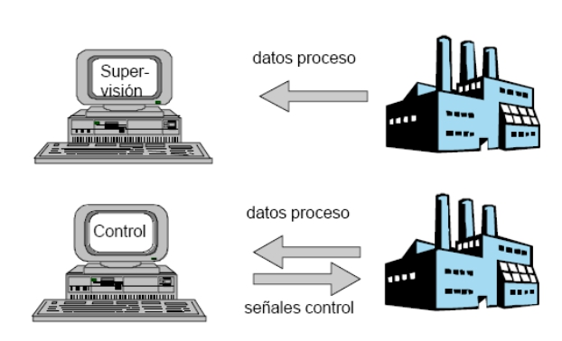

Tema 1
INTRODUCCIÓN AL DISEÑO ASISTIDO POR COMPUTADORA
Maestro:
Francisco Ruvalcaba Grandos
# INTRODUCCIÓN Los programas de CAD/CAM contribuyen fuertemente al desarrollo de conocimiento basado en la ingeniería, ya que, en cierta manera, ejecutan la información almacenada del conocimiento. En el presente capitulo se definen el CAD y CAM, así como otras tecnologías derivadas como el CAE, que a partir de su desarrollo a través de la informática fueron implantándose en la industria de tal forma que hoy día, no se concibe la ingeniería sin estos sistemas. Al igual que en el capítulo anterior describiremos el proceso histórico en el que se observará su desarrollo informático, las empresas que los implementan y sus usuarios finales en la industria. Por último se analizará sus componentes esenciales y se hará un breve repaso de la situación actual en distintos campos de la técnica. --- # DEFINICIÓN DE LOS SISTEMAS CAD/CAM --- # CAD/CAM EN EL PROCESO DE DISEÑO Y FABRICACIÓN El Diseño y la fabricación asistidos por ordenador (CAD/CAM) es una disciplina que estudia el uso de sistemas informáticos como herramienta de soporte en todos los procesos involucrados en el diseño y la fabricación de cualquier tipo de producto. Esta disciplina se ha convertido en un requisito indispensable para la industria actual que se enfrenta a la necesidad de mejorar la calidad, disminuir los costes y acortar los tiempos de diseño y producción. La única alternativa para conseguir este triple objetivo es la de utilizar la potencia de las herramientas informáticas actuales e integrar todos los procesos, para reducir los costes (de tiempo y dinero) en el desarrollo de los productos y en su fabricación. El uso cooperativo de herramientas de diseño y de fabricación ha dado lugar a la aparición de una nueva tecnología denominada ‘Fabricación Integrada por Ordenador’ e incluso se habla de la ‘Gestión Integrada por Ordenador’ como el último escalón de automatización hacia el que todas las empresas deben orientar sus esfuerzos. Esta tecnología consiste en la gestión integral de todas las actividades y procesos desarrollados dentro de una empresa mediante un sistema informático. Para llegar a este escalón sería necesario integrar, además de los procesos de diseño y fabricación, los procesos administrativos y de gestión de la empresa lo que rebasa el objetivo más modesto de este apartado que se centra en los procesos de diseño y fabricación, básicos para la gestión integrada. CAD es el acrónimo de ‘Computer Aided Design’ o diseño asistido por computador. Se trata de la tecnología implicada en el uso de ordenadores para realizar tareas de creación, modificación, análisis y optimización de un diseño. De esta forma, cualquier aplicación que incluya una interfaz gráfica y realice alguna tarea de ingeniería se considera software de CAD. Las herramientas de CAD abarcan desde herramientas de modelado geométrico hasta aplicaciones a medida para el análisis u optimización de un producto especifico. Entre estos dos extremos se encuentran herramientas de modelado y análisis de tolerancias, calculo de propiedades físicas (masa, volumen, momentos, etc.), modelado y análisis de elementos finitos, ensamblado, etc. La función principal en estas herramientas es la definición de la geometría del diseño (pieza mecánica, arquitectura, circuito electrónico, etc.) ya que la geometría es esencial para las actividades subsecuentes en el ciclo de producto descrito en la figura 2.1. La geometría de un objeto se usa en etapas posteriores en las que se realizan tareas de ingeniería y fabricación. De esta forma se habla también de Ingeniería asistida por Ordenador o Computer Aided Engineering (CAE) para referirse a las tareas de análisis, evaluación, simulación y optimización desarrolladas a lo largo del ciclo de vida del producto. De hecho, este es el mayor de los beneficios de la tecnología CAD, la reutilización de la información creada en la etapa de síntesis en las etapas de análisis y también en el proceso CAM. El termino CAD se puede definir como el uso de sistemas informáticos en la creación, modificación, análisis u optimización de un producto. Dichos sistemas informáticos constarían de un hardware y un software. El termino CAM se puede definir como el uso de sistemas informáticos para la planificación, gestión y control de las operaciones de una planta de fabricación mediante una interfaz directa o indirecta entre el sistema informático y los recursos de producción. Así pues, las aplicaciones del CAM se dividen en dos categorías: **Interfaz directa:** Son aplicaciones en las que el ordenador se conecta directamente con el proceso de producción para monitorizar su actividad y realizar tareas de supervisión y control. Así pues estas aplicaciones se dividen en dos grupos: - Supervisión: implica un flujo de datos del proceso de producción al computador con el propósito de observar el proceso y los recursos asociados y recoger datos. - Control: supone un paso más allá que la supervisión, ya que no solo se observa el proceso, sino que se ejerce un control basándose en dichas observaciones. **Interfaz indirecta:** Se trata de aplicaciones en las que el ordenador se utiliza como herramienta de ayuda para la fabricación, pero en las que no existe una conexión directa con el proceso de producción. ### Supervisión y control  Una de las técnicas más utilizadas en la fase de fabricación es el Control Numérico. Se trata de la tecnología que utiliza instrucciones programadas para controlar maquinas herramienta que cortan, doblan, perforan o transforman una materia prima en un producto terminado. Las aplicaciones informáticas son capaces de generar, de forma automática, gran cantidad de instrucciones de control numérico utilizando la información geométrica generada en la etapa de diseño junto con otra información referente a materiales, máquinas, etc. que también se encuentra en la base de datos. Los esfuerzos de investigación se concentran en la reducción de la intervención de los operarios. Otra función significativa del CAM es la programación de robots que operan normalmente en células de fabricación seleccionando y posicionando herramientas y piezas para las máquinas de control numérico. Estos robots también pueden realizar tareas individuales tales como soldadura, pintura o transporte de equipos y piezas dentro del taller. La planificación de procesos es la tarea clave en para conseguir la automatización deseada, sirviendo de unión entre los procesos de CAD y CAM. El plan de procesos determina de forma detallada la secuencia de pasos de producción requeridos para fabricar y ensamblar, desde el inicio a la finalización del proceso de producción. Aunque la generación automática de planes de producción es una tarea compleja, el uso de la Tecnología de Grupos supone una gran ayuda, ya que permite generar nuevos planes a partir de los planes existentes para piezas similares. Las piezas se organizan en familias y cada nueva pieza se clasifica dentro de una familia, según las características o los elementos que la componen. Esta tarea puede realizarse fácilmente utilizando técnicas de Modelado Basado en Características (Feature-Based Modeling) junto con la Tecnología de Grupos. Además, los sistemas informáticos pueden usarse para determinar el aprovisionamiento de materias primas y piezas necesarias para cumplir el programa de trabajo de la manera más eficiente, minimizando los costes financieros y de almacenaje. Esta actividad se denomina Planificación de Recursos Materiales (Material Requirement Planning o MRP). También es posible ejercer tareas de monitorización y control de la actividad de las máquinas del taller que se integran bajo el nombre de Planificación de Recursos de Manufacturación (Manufacturing Requirement Planning o MRPII). La Ingeniería Asistida por Ordenador (Computer Aided Engineering o CAE) es la tecnología que se ocupa del uso de sistemas informáticos para analizar la geometría generada por las aplicaciones de CAD, permitiendo al diseñador simular y estudiar el comportamiento del producto para refinar y optimizar dicho diseño. Existen herramientas para un amplio rango de análisis. Los programas de cinemática, por ejemplo, pueden usarse para determinar trayectorias de movimiento y velocidades de ensamblado de mecanismos. Los programas de análisis dinámico de (grandes) desplazamientos se usan para determinar cargas y desplazamientos en productos complejos como los automóviles. Las aplicaciones de temporización lógica y verificación simulan el comportamiento de circuitos electrónicos complejos. El método de análisis por ordenador más ampliamente usado en ingeniería es el método de elementos finitos o FEM (de Finite Element Method). Se utiliza para determinar tensiones, deformaciones, transmisión de calor, distribución de campos magnéticos, flujo de fluidos y cualquier otro problema de campos continuos que serían prácticamente imposibles de resolver utilizando otros métodos. En este método, la estructura se representa por un modelo de análisis constituido de elementos interconectados que dividen el problema en elementos manejables por el ordenador Como se ha mencionado anteriormente, el método de elementos finitos requiere más un modelo abstracto de descomposición espacial que la propia geometría del diseño. Dicho modelo se obtiene eliminando los detalles innecesarios de dicha geometría o reduciendo el número de dimensiones. Por ejemplo, un objeto tridimensional de poco espesor se puede convertir en un objeto bidimensional cuando se hace la conversión al modelo de análisis. Por tanto, es necesario generar dicho modelo abstracto de forma interactiva o automática para poder aplicar el método de elementos finitos. Una vez creado dicho modelo, se genera la malla de elementos finitos para poder aplicar el método. Al software que se encarga de generar el modelo abstracto y la malla de elementos finitos se le denomina pre-procesador. Después de realizar el análisis de cada elemento, el ordenador ensambla los resultados y los visualiza. Las regiones con gran tensión se destacan, por ejemplo, mostrándose en color rojo. Las herramientas que realizan este tipo de visualización se denominan post-procesadores. Existen también numerosas herramientas para la optimización de diseños. Se están realizando investigaciones para determinar automáticamente la forma de un diseño, integrando el análisis y la optimización. Para ello se asume que el diseño tiene una forma inicial simple a partir de la cual el procedimiento de optimización calcula los valores óptimos de ciertos parámetros para satisfacer un cierto criterio al mismo tiempo que se cumplen unas restricciones, obteniéndose la forma óptima con dicho parámetros. La ventaja del análisis y optimización de diseños es que permite a los ingenieros determinar cómo se va a comportar el diseño y eliminar errores sin la necesidad gastar tiempo y dinero construyendo y evaluando prototipos reales. Ya que el coste de reingeniería crece exponencialmente en las últimas etapas del desarrollo de un producto y en la producción, la optimización temprana que permiten las herramientas CAE supone un gran ahorro de tiempo y una notable disminución de costes. Así pues, CAD; CAM y CAE son tecnologías que tratan de automatizar ciertas tareas del ciclo de producto y hacerlas más eficientes. Dado que se han desarrollado de forma separada, aun no se han conseguido todos los beneficios potenciales de integrar las actividades de diseño y fabricación del ciclo de producto. Para solucionar este problema ha aparecido una nueva tecnología: la fabricación integrada por ordenador o CIM (de Computer Integrated Manufacturing). Esta tecnología tiene el objetivo de aunar las islas de automatización conjuntándolas para que cooperen en un sistema único y eficiente. El CIM trata de usar una única base de datos que integre toda la información de la empresa y a partir de la cual se pueda realizar una gestión integral de todas las actividades de la misma, repercutiendo sobre todas las actividades de administración y gestión que se realicen en la empresa, además de las tareas de ingeniería propias del CAD y el CAM. Se dice que el CIM es más una filosofía de negocio que un sistema informático. El CIM sobrepasa los objetivos de este proyecto ya que integra conceptos de administración y gestión empresarial que no estudiaremos. --- # DESARROLLO HISTÓRICO --- # COMPONENTES DEL CAD/CAM --- # CAD/CAM DESDE EL PUNTO DE VISTA INDUSTRIAL --- # SITUACIÓN ACTUAL Y PERSPECTIVAS --- --- <!-- <img src="linea.png" width="25%"> -->